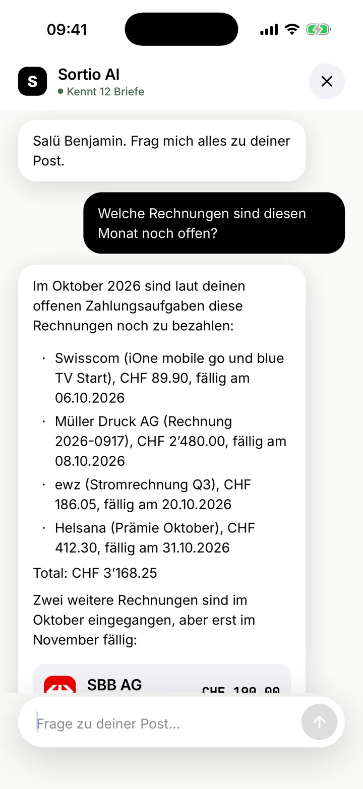

Sortio AI
Frag deine Unterlagen.Bekomm Antworten.

Welche Rechnungen sind diesen Monat noch offen?
Sortio AI
Im Oktober sind noch 4 Rechnungen offen, jede mit Betrag und Fälligkeit.
TotalCHF 3’168.25
Sortio AI

Sortio AI
Im Oktober sind noch 4 Rechnungen offen, jede mit Betrag und Fälligkeit.